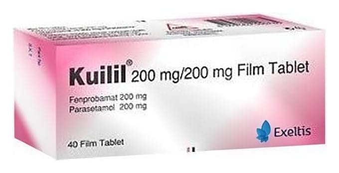

Kuilil 200 mg/200 mg Film Tablet, 40 Tablet

Ne için kullanılır
KT · Bölüm 1• KUİLİL®tablet formunda bir ürün olup, ağrı kesici ve kas gevşetici olarak adlandırılan ilaç grubuna dahildir. • Pembe renkli ve film kaplı her bir tablet etkin madde olarak 200 mg fenprobamat ve 200 mg parasetamol içermektedir. KUİLİL®, 40 film kaplı tablet içeren blister ambalajda kullanıma sunulmaktadır. • KUİLİL®, kas spazmının (istemsiz kasılma) neden olduğu ağrılı durumlarda spazmın giderilmesi ve ağrının hafifletilmesi amacıyla kullanılmaktadır.